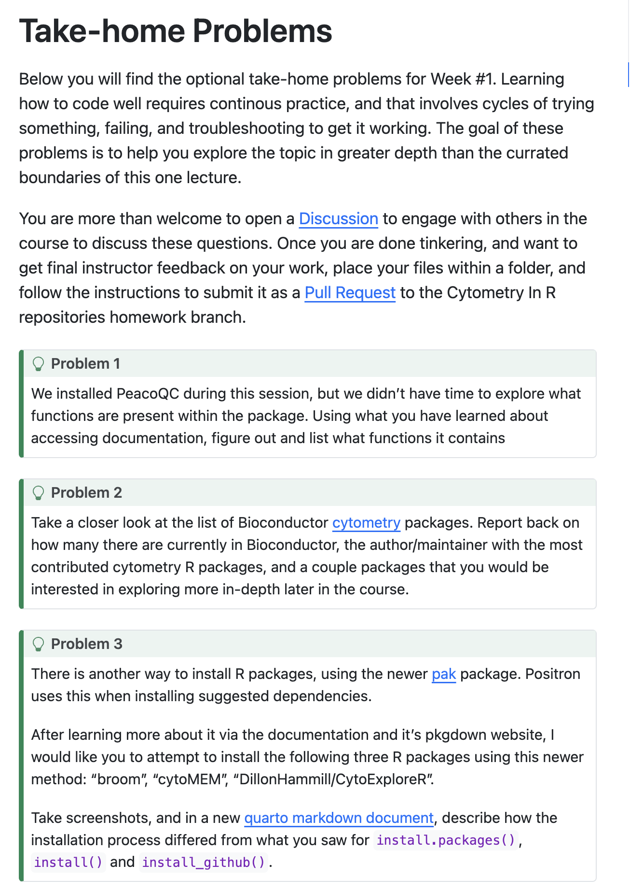
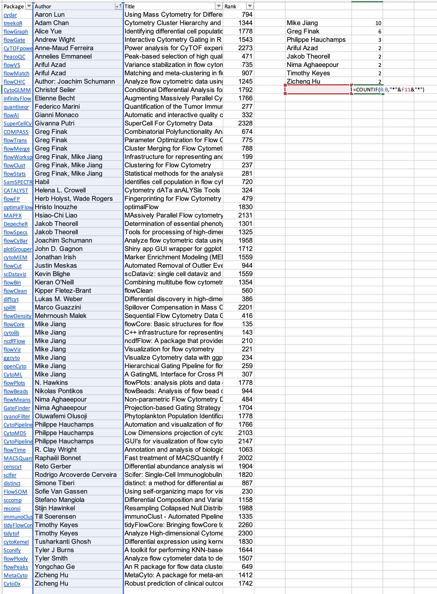
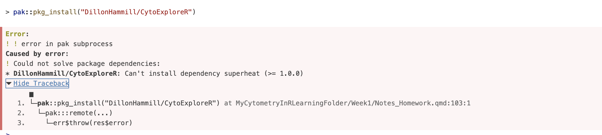
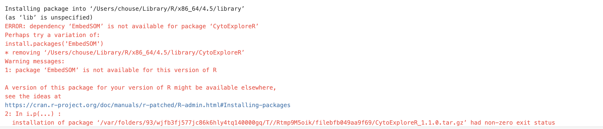

#load CRAN packages: install.packages("")
library(dplyr)
library(stringr)
library(purrr)
library(ggplot2)
library(tidyr)
library(xml2)
library(lubridate)
library(httr2)
library(devtools)
library(plotly)
library(Rtsne)
library(uwot)
#load bioconductor packages: install("")
library(PeacoQC)
library(flowCore)
library(flowWorkspace)
library(ggcyto)
library(openCyto)
library(FlowSOM)
library(flowGate)
library(CytoML)
#load github packages: install_github("username/package")
library(remotes)
library(CytoNorm)
library(cyCombine)Homework Week 1
Installing and Loading Packages
Install packages (see notes). Remember all require ““. Load packages.
Homework
Details can be found here
See screenshot:

Problem 1
What is in bioconductor package PeacoQC?
PeacoQC includes functions for flow or mass cytometry data quality control (QC) and data pre-processing. It functions in the following order: removing margins, compensating, transforming, and assessing QC, returning a QC plot and cleaned flow set in a new fcs file.
Details can be found here or can be found using r:
library(PeacoQC)
#load supporting documents
browseVignettes("PeacoQC")#list all functions
ls("package:PeacoQC")[1] "PeacoQC" "PeacoQCHeatmap" "PlotPeacoQC" "RemoveDoublets"
[5] "RemoveMargins" Problem 2
There are 69 flow cytometry packages in Bioconductor as found here.
I downloaded these into excel, filtered by name, and used COUNTIF with partial name recognition (due to co-authors) to count. I didn’t know the partial search functions with COUNTIF, so that was fun to learn. See screenshots:

I think I could do this in R, too, but I will have to come back later to try that.
Mike Jiang (10) followed by collaborator Greg Finak (6)
I would be interested in FlowCore, FlowSOM, PeacoQC, and flowMeans, which are bascially any I have heard of before. That is to say, if I hear of it, I would like to learn more.
Problem 3
What is in CRAN package pak? Linked here or here for CRAN.
pak is a package that can install from CRAN, Bioconductor, GitHub, URLs, git repositories, and local files. It is an alternative to the install.packages(““) for CRAN, install(”“) for Bioconductor, and the install_github(”username/package”) for GitHub. It is fast – it performs HTTP queries concurrently and caches backup. It is safe – it auto-installs missing dependencies and corrects CRAN errors. It is convenient – it is self-contained and installs from multiple sources.
#install.packages("pak")
library(pak)
#pak::pkg_install("broom")
library(broom)
#pak::pkg_install("cytoMEM")
library(cytoMEM)
#install GitHub package "DillonHammill/CytoExploreR"
#pak::pkg_install("DillonHammill/CytoExploreR") failed, needs superheatScreenshot of error 1:

#pak::pkg_install("superheat")
library(superheat)
#pak::pkg_install("DillonHammill/CytoExploreR") still failed, same error
#pak::pkg_install("DillonHammill/CytoExploreR",upgrade = TRUE) failed
#pak::pkg_install("DillonHammill/CytoExploreR",dependences = NA) failed
#pak::pkg_install("DillonHammill/CytoExploreR",dependences = TRUE) failed
#pak::pkg_install("DillonHammill/CytoExploreR",ask = TRUE) failed
#is it having an issue with github?
#library(remotes)
#pak::pkg_install("DillonHammill/CytoExploreR",ask = TRUE) still failed
#pkg_deps_explain("DillonHammill/CytoExploreR", "superheat") failed
#pak(pkg = "DillonHammill/CytoExploreR")
#resorted to normal install function
#install_github("DillonHammill/CytoExploreR") failed, needs EmbedSOM
#pak::pkg_install("EmbedSOM") failed, google says dropped from CRANScreenshot of error 2:

#pak::pkg_install("exaexa/EmbedSOM")
library(EmbedSOM)
#pak::pkg_install("DillonHammill/CytoExploreR") still failed
#install_github("DillonHammill/CytoExploreR",force = TRUE)
library(CytoExploreR)
#initially failed, but reloaded R and tried it again and it seemed to worksession_info()─ Session info ───────────────────────────────────────────────────────────────
setting value
version R version 4.5.2 (2025-10-31)
os macOS Ventura 13.7.8
system x86_64, darwin20
ui X11
language (EN)
collate en_US.UTF-8
ctype en_US.UTF-8
tz America/Los_Angeles
date 2026-03-02
pandoc 3.6.3 @ /Applications/Positron.app/Contents/Resources/app/quarto/bin/tools/x86_64/ (via rmarkdown)
quarto 1.8.27 @ /Applications/Positron.app/Contents/Resources/app/quarto/bin/quarto
─ Packages ───────────────────────────────────────────────────────────────────
package * version date (UTC) lib source
abind 1.4-8 2024-09-12 [1] CRAN (R 4.5.0)
annotate 1.88.0 2025-10-29 [1] Bioconductor 3.22 (R 4.5.1)
AnnotationDbi 1.72.0 2025-10-29 [1] Bioconductor 3.22 (R 4.5.1)
askpass 1.2.1 2024-10-04 [1] CRAN (R 4.5.0)
backports 1.5.0 2024-05-23 [1] CRAN (R 4.5.0)
BH * 1.90.0-1 2025-12-14 [1] CRAN (R 4.5.1)
Biobase 2.70.0 2025-10-29 [1] https://bioc-release.r-universe.dev (R 4.5.2)
BiocGenerics 0.56.0 2025-10-29 [1] Bioconductor 3.22 (R 4.5.1)
BiocManager 1.30.27 2025-11-14 [1] CRAN (R 4.5.1)
BiocParallel 1.44.0 2025-10-30 [1] Bioconductor 3.22 (R 4.5.1)
Biostrings 2.78.0 2025-10-29 [1] https://bioc-release.r-universe.dev (R 4.5.2)
bit 4.6.0 2025-03-06 [1] CRAN (R 4.5.0)
bit64 4.6.0-1 2025-01-16 [1] CRAN (R 4.5.0)
bitops 1.0-9 2024-10-03 [1] CRAN (R 4.5.0)
blob 1.3.0 2026-01-14 [1] CRAN (R 4.5.1)
broom * 1.0.12 2026-01-27 [1] CRAN (R 4.5.1)
bslib 0.10.0 2026-01-26 [1] CRAN (R 4.5.1)
cachem 1.1.0 2024-05-16 [1] CRAN (R 4.5.0)
car 3.1-5 2026-02-03 [1] CRAN (R 4.5.1)
carData 3.0-6 2026-01-30 [1] CRAN (R 4.5.1)
caTools 1.18.3 2024-09-04 [1] CRAN (R 4.5.0)
changepoint 2.3 2024-11-04 [1] CRAN (R 4.5.0)
circlize 0.4.17 2025-12-08 [1] CRAN (R 4.5.1)
cli 3.6.5 2025-04-23 [1] CRAN (R 4.5.0)
clue 0.3-66 2024-11-13 [1] CRAN (R 4.5.0)
cluster 2.1.8.2 2026-02-05 [1] CRAN (R 4.5.1)
codetools 0.2-20 2024-03-31 [2] CRAN (R 4.5.2)
colorRamps 2.3.4 2024-03-07 [1] CRAN (R 4.5.0)
colorspace 2.1-2 2025-09-22 [1] CRAN (R 4.5.1)
ComplexHeatmap 2.26.0 2025-10-29 [1] Bioconductor 3.22 (R 4.5.1)
ConsensusClusterPlus 1.74.0 2025-10-29 [1] Bioconductor 3.22 (R 4.5.1)
crayon 1.5.3 2024-06-20 [1] CRAN (R 4.5.0)
cyCombine * 0.3.0 2026-02-05 [1] Github (biosurf/cyCombine@1035e32)
CytoExploreR * 1.1.0 2026-03-03 [1] Github (DillonHammill/CytoExploreR@71a8da6)
cytolib 2.22.0 2025-10-29 [1] https://bioc-release.r-universe.dev (R 4.5.2)
cytoMEM * 1.14.0 2025-10-29 [1] Bioconduc~
CytoML * 2.22.0 2025-10-29 [1] https://bioc-release.r-universe.dev (R 4.5.2)
CytoNorm * 2.0.11 2026-02-05 [1] Github (saeyslab/CytoNorm@559640c)
data.table 1.18.2.1 2026-01-27 [1] CRAN (R 4.5.1)
DBI 1.2.3 2024-06-02 [1] CRAN (R 4.5.0)
DEoptimR 1.1-4 2025-07-27 [1] CRAN (R 4.5.1)
devtools * 2.4.6 2025-10-03 [1] CRAN (R 4.5.1)
digest 0.6.39 2025-11-19 [1] CRAN (R 4.5.1)
doParallel 1.0.17 2022-02-07 [1] CRAN (R 4.5.0)
dplyr * 1.2.0 2026-02-03 [1] CRAN (R 4.5.1)
edgeR 4.8.2 2025-12-23 [1] https://bioc-release.r-universe.dev (R 4.5.2)
ellipsis 0.3.2 2021-04-29 [1] CRAN (R 4.5.0)
EmbedSOM * 2.2 2026-03-03 [1] Github (exaexa/EmbedSOM@7ab25f2)
evaluate 1.0.5 2025-08-27 [1] CRAN (R 4.5.1)
farver 2.1.2 2024-05-13 [1] CRAN (R 4.5.0)
fastmap 1.2.0 2024-05-15 [1] CRAN (R 4.5.0)
flowAI 1.40.0 2025-10-29 [1] Bioconductor 3.22 (R 4.5.1)
flowClust 3.48.0 2025-10-29 [1] https://bioc-release.r-universe.dev (R 4.5.2)
flowCore * 2.22.1 2026-01-01 [1] https://bioc-release.r-universe.dev (R 4.5.2)
flowGate * 1.10.0 2025-10-29 [1] Bioconductor 3.22 (R 4.5.1)
FlowSOM * 2.18.0 2025-10-29 [1] https://bioc-release.r-universe.dev (R 4.5.2)
flowWorkspace * 4.22.1 2026-01-01 [1] https://bioc-release.r-universe.dev (R 4.5.2)
foreach 1.5.2 2022-02-02 [1] CRAN (R 4.5.0)
Formula 1.2-5 2023-02-24 [1] CRAN (R 4.5.0)
fs 1.6.6 2025-04-12 [1] CRAN (R 4.5.0)
genefilter 1.92.0 2025-10-29 [1] https://bioc-release.r-universe.dev (R 4.5.2)
generics 0.1.4 2025-05-09 [1] CRAN (R 4.5.0)
GetoptLong 1.1.0 2025-11-28 [1] CRAN (R 4.5.1)
ggcyto * 1.38.1 2026-01-04 [1] https://bioc-release.r-universe.dev (R 4.5.2)
ggforce 0.5.0 2025-06-18 [1] CRAN (R 4.5.0)
ggnewscale 0.5.2 2025-06-20 [1] CRAN (R 4.5.0)
ggplot2 * 4.0.2 2026-02-03 [1] CRAN (R 4.5.1)
ggpubr 0.6.2 2025-10-17 [1] CRAN (R 4.5.1)
ggridges 0.5.7 2025-08-27 [1] CRAN (R 4.5.1)
ggsignif 0.6.4 2022-10-13 [1] CRAN (R 4.5.0)
GlobalOptions 0.1.3 2025-11-28 [1] CRAN (R 4.5.1)
glue 1.8.0 2024-09-30 [1] CRAN (R 4.5.0)
gplots 3.3.0 2025-11-30 [1] CRAN (R 4.5.1)
graph 1.88.1 2025-12-07 [1] https://bioc-release.r-universe.dev (R 4.5.2)
gridExtra 2.3 2017-09-09 [1] CRAN (R 4.5.0)
gtable 0.3.6 2024-10-25 [1] CRAN (R 4.5.0)
gtools 3.9.5 2023-11-20 [1] CRAN (R 4.5.0)
hexbin 1.28.5 2024-11-13 [1] CRAN (R 4.5.0)
htmltools 0.5.9 2025-12-04 [1] CRAN (R 4.5.1)
htmlwidgets 1.6.4 2023-12-06 [1] CRAN (R 4.5.0)
httpuv 1.6.16 2025-04-16 [1] CRAN (R 4.5.0)
httr 1.4.7 2023-08-15 [1] CRAN (R 4.5.0)
httr2 * 1.2.2 2025-12-08 [1] CRAN (R 4.5.1)
igraph * 2.2.1 2025-10-27 [1] CRAN (R 4.5.1)
IRanges 2.44.0 2025-10-29 [1] Bioconductor 3.22 (R 4.5.1)
iterators 1.0.14 2022-02-05 [1] CRAN (R 4.5.0)
jquerylib 0.1.4 2021-04-26 [1] CRAN (R 4.5.0)
jsonlite 2.0.0 2025-03-27 [1] CRAN (R 4.5.0)
KEGGREST 1.50.0 2025-10-29 [1] Bioconductor 3.22 (R 4.5.1)
KernSmooth 2.23-26 2025-01-01 [2] CRAN (R 4.5.2)
knitr 1.51 2025-12-20 [1] CRAN (R 4.5.1)
kohonen 3.0.13 2026-01-22 [1] CRAN (R 4.5.1)
later 1.4.7 2026-02-24 [1] CRAN (R 4.5.2)
lattice 0.22-7 2025-04-02 [2] CRAN (R 4.5.2)
lazyeval 0.2.2 2019-03-15 [1] CRAN (R 4.5.0)
lifecycle 1.0.5 2026-01-08 [1] CRAN (R 4.5.1)
limma 3.66.0 2025-10-29 [1] https://bioc-release.r-universe.dev (R 4.5.2)
locfit 1.5-9.12 2025-03-05 [1] CRAN (R 4.5.0)
lubridate * 1.9.5 2026-02-04 [1] CRAN (R 4.5.1)
magrittr 2.0.4 2025-09-12 [1] CRAN (R 4.5.1)
MASS 7.3-65 2025-02-28 [2] CRAN (R 4.5.2)
Matrix * 1.7-4 2025-08-28 [2] CRAN (R 4.5.2)
MatrixGenerics 1.22.0 2025-10-29 [1] Bioconductor 3.22 (R 4.5.1)
matrixStats 1.5.0 2025-01-07 [1] CRAN (R 4.5.0)
memoise 2.0.1 2021-11-26 [1] CRAN (R 4.5.0)
mgcv 1.9-4 2025-11-07 [1] CRAN (R 4.5.1)
mime 0.13 2025-03-17 [1] CRAN (R 4.5.0)
ncdfFlow * 2.56.0 2025-10-29 [1] https://bioc-release.r-universe.dev (R 4.5.2)
nlme 3.1-168 2025-03-31 [2] CRAN (R 4.5.2)
openCyto * 2.22.0 2025-10-29 [1] https://bioc-release.r-universe.dev (R 4.5.2)
openssl 2.3.5 2026-02-26 [1] CRAN (R 4.5.2)
otel 0.2.0 2025-08-29 [1] CRAN (R 4.5.1)
pak * 0.9.2 2025-12-22 [1] CRAN (R 4.5.1)
PeacoQC * 1.20.0 2025-10-29 [1] Bioconductor 3.22 (R 4.5.1)
pheatmap 1.0.13 2025-06-05 [1] CRAN (R 4.5.0)
pillar 1.11.1 2025-09-17 [1] CRAN (R 4.5.1)
pkgbuild 1.4.8 2025-05-26 [1] CRAN (R 4.5.0)
pkgconfig 2.0.3 2019-09-22 [1] CRAN (R 4.5.0)
pkgload 1.5.0 2026-02-03 [1] CRAN (R 4.5.1)
plotly * 4.12.0 2026-01-24 [1] CRAN (R 4.5.1)
plyr 1.8.9 2023-10-02 [1] CRAN (R 4.5.0)
png 0.1-8 2022-11-29 [1] CRAN (R 4.5.0)
polyclip 1.10-7 2024-07-23 [1] CRAN (R 4.5.0)
promises 1.5.0 2025-11-01 [1] CRAN (R 4.5.1)
purrr * 1.2.1 2026-01-09 [1] CRAN (R 4.5.1)
R6 2.6.1 2025-02-15 [1] CRAN (R 4.5.0)
rappdirs 0.3.4 2026-01-17 [1] CRAN (R 4.5.1)
RBGL 1.86.0 2025-10-29 [1] https://bioc-release.r-universe.dev (R 4.5.2)
RColorBrewer 1.1-3 2022-04-03 [1] CRAN (R 4.5.0)
Rcpp 1.1.1 2026-01-10 [1] CRAN (R 4.5.1)
remotes * 2.5.0 2024-03-17 [1] CRAN (R 4.5.0)
reshape2 1.4.5 2025-11-12 [1] CRAN (R 4.5.1)
reticulate 1.45.0 2026-02-13 [1] CRAN (R 4.5.2)
Rgraphviz 2.54.0 2025-10-29 [1] https://bioc-release.r-universe.dev (R 4.5.2)
rhandsontable 0.3.8 2021-05-27 [1] CRAN (R 4.5.0)
rjson 0.2.23 2024-09-16 [1] CRAN (R 4.5.0)
rlang 1.1.7 2026-01-09 [1] CRAN (R 4.5.1)
rmarkdown 2.30 2025-09-28 [1] CRAN (R 4.5.1)
robustbase 0.99-7 2026-02-05 [1] CRAN (R 4.5.1)
RProtoBufLib 2.22.0 2025-10-29 [1] https://bioc-release.r-universe.dev (R 4.5.2)
RSpectra 0.16-2 2024-07-18 [1] CRAN (R 4.5.0)
RSQLite 2.4.5 2025-11-30 [1] CRAN (R 4.5.1)
rstatix 0.7.3 2025-10-18 [1] CRAN (R 4.5.1)
rsvd 1.0.5 2021-04-16 [1] CRAN (R 4.5.0)
Rtsne * 0.17 2023-12-07 [1] CRAN (R 4.5.0)
S4Vectors 0.48.0 2025-10-29 [1] Bioconductor 3.22 (R 4.5.1)
S7 0.2.1 2025-11-14 [1] CRAN (R 4.5.1)
sass 0.4.10 2025-04-11 [1] CRAN (R 4.5.0)
scales 1.4.0 2025-04-24 [1] CRAN (R 4.5.0)
Seqinfo 1.0.0 2025-10-29 [1] Bioconductor 3.22 (R 4.5.1)
sessioninfo 1.2.3 2025-02-05 [1] CRAN (R 4.5.0)
shape 1.4.6.1 2024-02-23 [1] CRAN (R 4.5.0)
shiny 1.13.0 2026-02-20 [1] CRAN (R 4.5.2)
statmod 1.5.1 2025-10-09 [1] CRAN (R 4.5.1)
stringi 1.8.7 2025-03-27 [1] CRAN (R 4.5.0)
stringr * 1.6.0 2025-11-04 [1] CRAN (R 4.5.1)
superheat * 0.1.0 2017-02-04 [1] CRAN (R 4.5.0)
survival 3.8-6 2026-01-16 [1] CRAN (R 4.5.1)
sva 3.58.0 2025-10-29 [1] Bioconductor 3.22 (R 4.5.1)
tibble 3.3.1 2026-01-11 [1] CRAN (R 4.5.1)
tidyr * 1.3.2 2025-12-19 [1] CRAN (R 4.5.1)
tidyselect 1.2.1 2024-03-11 [1] CRAN (R 4.5.0)
timechange 0.4.0 2026-01-29 [1] CRAN (R 4.5.1)
tweenr 2.0.3 2024-02-26 [1] CRAN (R 4.5.0)
umap 0.2.10.0 2023-02-01 [1] CRAN (R 4.5.0)
usethis * 3.2.1 2025-09-06 [1] CRAN (R 4.5.1)
uwot * 0.2.4 2025-11-10 [1] CRAN (R 4.5.1)
vctrs 0.7.1 2026-01-23 [1] CRAN (R 4.5.1)
viridisLite 0.4.3 2026-02-04 [1] CRAN (R 4.5.1)
visNetwork 2.1.4 2025-09-04 [1] CRAN (R 4.5.1)
withr 3.0.2 2024-10-28 [1] CRAN (R 4.5.0)
xfun 0.56 2026-01-18 [1] CRAN (R 4.5.1)
XML 3.99-0.22 2026-02-10 [1] CRAN (R 4.5.2)
xml2 * 1.5.2 2026-01-17 [1] CRAN (R 4.5.1)
xtable 1.8-8 2026-02-22 [1] CRAN (R 4.5.2)
XVector 0.50.0 2025-10-29 [1] https://bioc-release.r-universe.dev (R 4.5.2)
yaml 2.3.12 2025-12-10 [1] CRAN (R 4.5.1)
zoo 1.8-15 2025-12-15 [1] CRAN (R 4.5.1)
[1] /Users/chouse/Library/R/x86_64/4.5/library
[2] /Library/Frameworks/R.framework/Versions/4.5-x86_64/Resources/library
* ── Packages attached to the search path.
──────────────────────────────────────────────────────────────────────────────